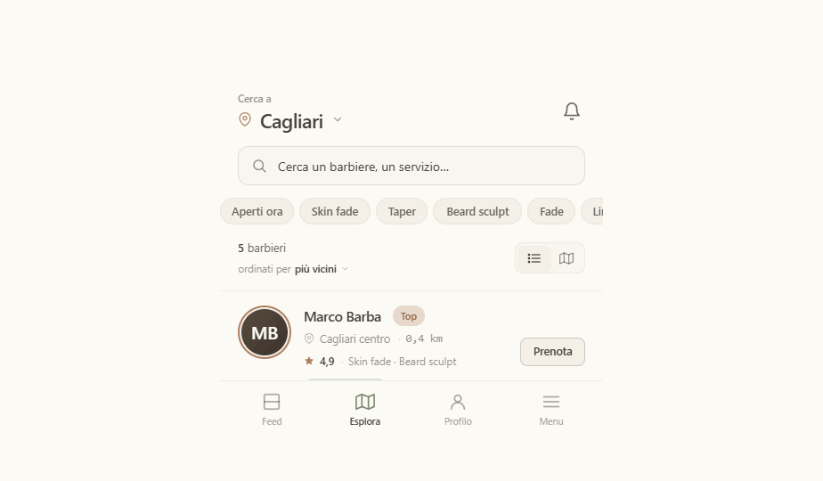
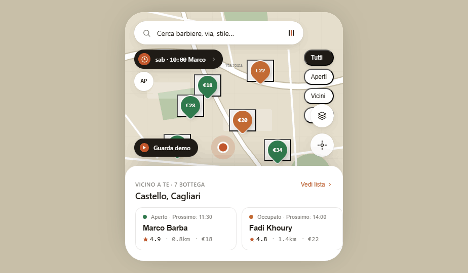
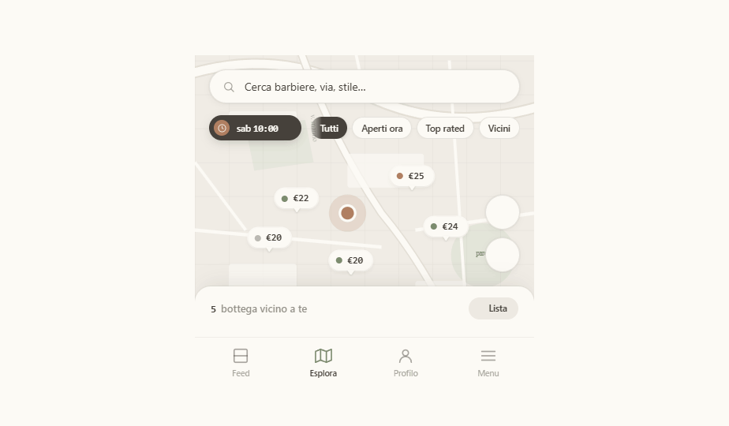

V4 è 100% V1 — stessa palette carta · inchiostro · clay, stessa tipografia Geist, stessi 12 schermi e flussi di prenotazione del campione — ma nell'Esplora abbiamo trapiantato la mappa-prima di V3: niente toggle mappa/lista, niente schermate separate. Mappa sempre presente come canvas, bottom sheet con snap (peek → lista → card barbiere), pin price-pill color-coded per stato. Tutto rivestito in Pari.
L'Esplora a confronto. V1 ha mappa + lista a toggle (sicuro, conosciuto). V3 ha la mappa come canvas (rivoluzionario, ma molto fuori dal brand). V4 prende l'UX di V3 e la riveste in Pari — l'evoluzione naturale di V1 senza romperla.
Toggle in alto, mappa in alto della schermata, lista lunga sotto. Familiare ma divide l'attenzione.

Niente bottom nav. Mappa fullscreen come canvas. Sheet sopra a 3 stati (peek / lista / card). Fuori palette V1.

Stessa UX di V3 (snap sheet, pin price-pill, agenda pill), rivestita in carta/clay/ink. Bottom nav mantenuto: l'Esplora è una tab, non l'intera app.

V1 era già il campione perché era fedele all'esistente. Il rischio di V3 era abbandonare il brand. V4 dimostra che si può tenere V1 al 100% e cambiare solo la schermata dove cambiare conta davvero: l'Esplora — il punto di entrata della prenotazione. Tutto il resto (feed, profilo, booking, bottega, login) resta identico a V1.
L'Esplora di V4 è già completa e usabile. Posso aggiornarlo come la versione "definitiva" del design system e rigenerare il pacchetto di handoff per Claude Code, oppure continuiamo a iterare sul map UX.